Demonstrate combined simulation for a sail in a LEO 28.5 degree orbit.
The gravity model is a 4x4. The disturbances will all default to on unless you add overrides to turn them off (drag, gravity gradient, etc).
Since version 9. ------------------------------------------------------------------------ See also: FSailCombined SailEnvironment SailDisturbance SailEphemEarth FOrbitSingle ST9Guidance, Altitude, QZero, AssignFHandle, Figui, InformDlg, Plot2D, Unit, Date2JD, El2RV, PltOrbit, SunV1, DisturbanceStruct, EnvironmentStruct, DrawSailAttitude, PlotSailForce, PlotSailProfile, DisplaySailProperties ------------------------------------------------------------------------
Contents
%--------------------------------------------------------------------------- % Copyright (c) 2007, 2010 Princeton Satellite Systems, Inc. % All rights reserved. %--------------------------------------------------------------------------- %%%%%%%%%%%%%%%%%%%%%%%%%%%%%%%%%%%%%%%%%%%%%%%%%%%%%%%%%%%%%%%%%%%%% %%%%%% USER PARAMETERS
Number of days to simulate
%---------------------------
nDays = 1;
Earth gravity parameters
%------------------------- nZonal = 4; nTesseral = 4; % Attitude profile method, see EarthGuidance % The available profiles are: % 1. Sun-pointing % 2. Constant force component along velocity vector % 3. Constant rotation with respect to LVLH frame % 4. Edge-on (no solar pressure force) % 5. Optimal SMA increase %----------------------------------------- method = -5;
CAD model selection
%-------------------- cadModel = 'SailGEO_450.mat';
Orbit and Epoch
%---------------- altitude = 800; % km inclination = 28.5*pi/180; % km jD = Date2JD([2010 3 15, 16 0 0]); %%%%%%%%%%%%%%%%%%%%%%%%%%%%%%%%%%%%%%%%%%%%%%%%%%%%%%%%%%%%%%%%%%%%% %%%%%%%%%%%%%%%%%%%%%%%%%%%%%%%%%%%%%%%%%%%%%%%%%%%%%%%%%%%%%%%%%%%%%
Sun ephemeris
%--------------
[uSun,rS] = SunV1( jD );
Constants
%---------- dE = load('EarthGravityModel.mat'); rE = dE.a; % radius of earth
Place sail in a 800 km, 28.5 degree orbit
%------------------------------------------ sma = 6378+altitude; el0 = [sma;inclination;0;0;0;0]; % Plot initial orbit with sun lighting PltOrbit( el0, jD ); set(gcf,'name','Initial Sail Orbit'); [r,v] = El2RV( el0 ); q = QZero; w = [0;0;0];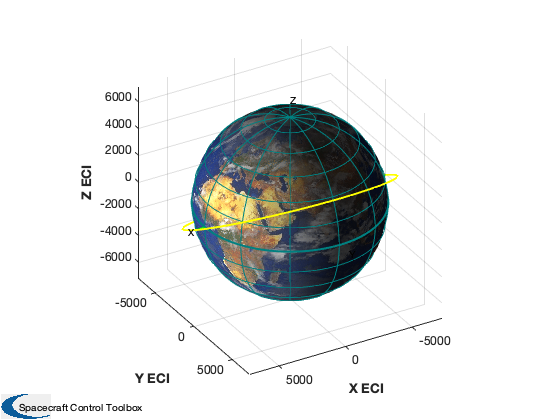
Initialize simulation data structure
%------------------------------------- [d,p] = InitializeSailSim(jD,cadModel,'EarthGuidance'); d = InitializeSailGravity( d, 'earth', dE, nZonal, nTesseral ); % override disturbance flags, if desired: % d.ggOn = 0; d.aeroOn = 0; % d.albedoOn = 0; % d.radOn = 0; % Set the guidance method d.method = method; tEnd = nDays*86400; opts = odeset('abstol',1e-12,'reltol',1e-10); hDlg = InformDlg( 'Integrating...', 'LEOCombinedDemo' ); tic [z, x] = ode113( @FSailCombined, [0 tEnd], [r;v;q;w], opts, p, d ); toc close(hDlg); % Find out how many points were computed disp('Number of output points') disp(length(z))
-----------------------
Flat Sail GEO
Sail normal: [1 0 0]
Sail area: 2000 m2
Sail mass: 500 kg
Sail inertia (kg/m2):
16741.667 0 0
0 8408.3333 0
0 0 8408.3333
Sail characteristic accel: 0.036213 mm/s2
Number of bodies in model: 1
Number of components in model: 2
Sail class components: 1
Sail optical properties
Component Sail:
Specular Front: 1 Back: 1
Diffuse Front: 0 Back: 0
Absorptivity Front: 0 Back: 0
Emissivity Front: 0.3 Back: 0.3
Elapsed time is 7.496493 seconds.
Number of output points
2505
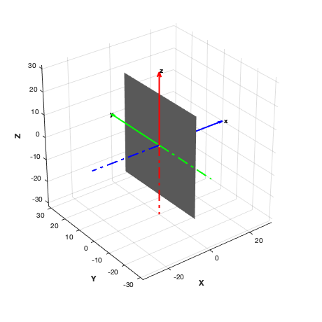 Extract the profiles from the orbit
%------------------------------------ [p, env, f, tq] = FSailCombined( z', x', p, d ); PlotSailProfile( p, env, [1;0;0] ); PlotSailForce( f, p, env ); Plot2D(z',tq.total,'Sec',{'Tx','Ty','Tz'},'Torque (N)') DrawSailAttitude( d.g, p.q(:,end), [env.uSun(:,end) -Unit(p.r(:,end))] ); Figui %-------------------------------------- % PSS internal file version information %--------------------------------------
ans =
Figure (Plot2D) with properties:
Number: 23
Name: 'Sail Force Vector (mN) in Rotating Frame'
Color: [1 1 1]
Position: [560 528 560 420]
Units: 'pixels'
Use GET to show all properties
hQ =
Quiver with properties:
Color: [0 0.447 0.741]
LineStyle: '-'
LineWidth: 0.5
XData: 0
YData: 0
ZData: 0
UData: 21.262
VData: -52.903
WData: -27.371
Use GET to show all properties
ans =
Surface with properties:
EdgeColor: 'none'
LineStyle: '-'
FaceColor: [0 0 1]
FaceLighting: 'gouraud'
FaceAlpha: 1
XData: [25×25 double]
YData: [25×25 double]
ZData: [25×25 double]
CData: [25×25 double]
Use GET to show all properties
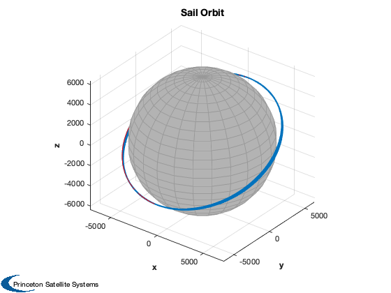 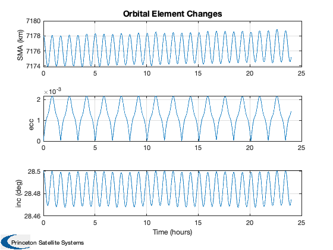  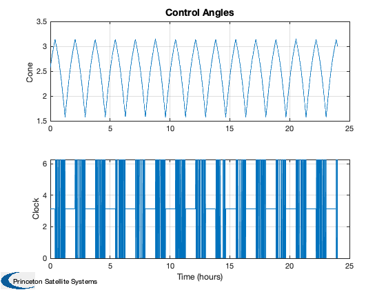 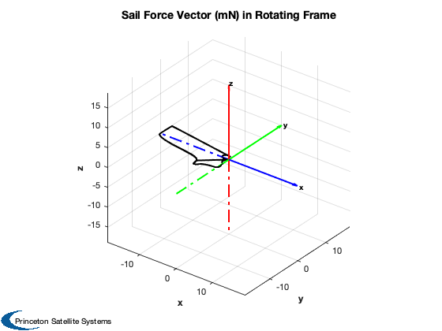 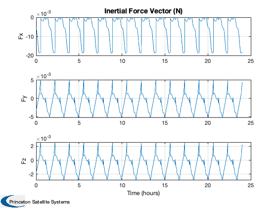 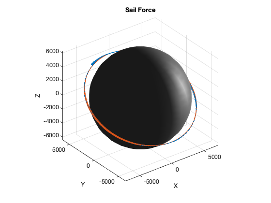 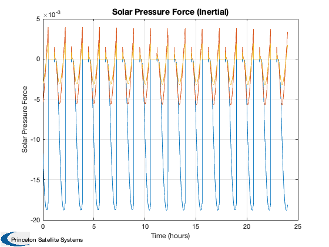 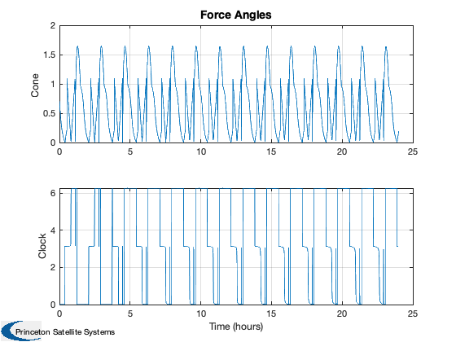 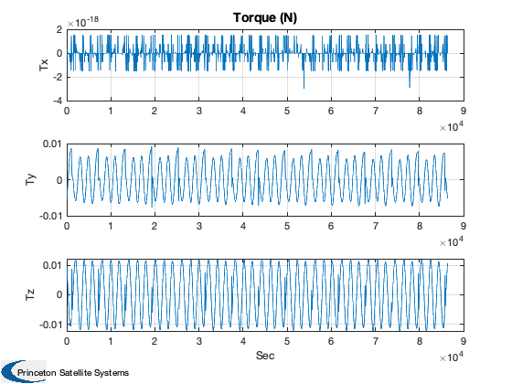 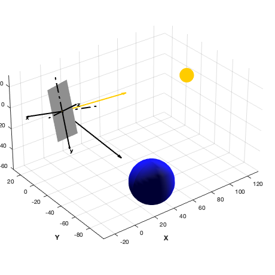 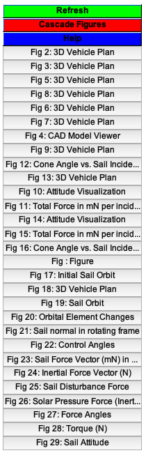
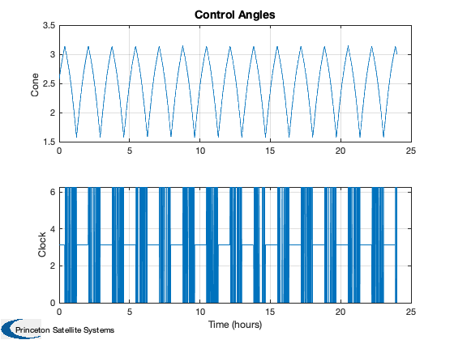 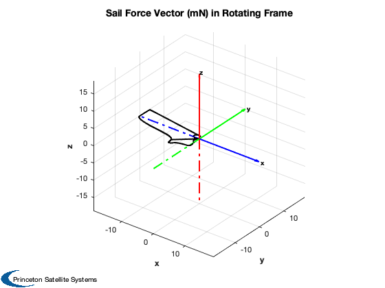 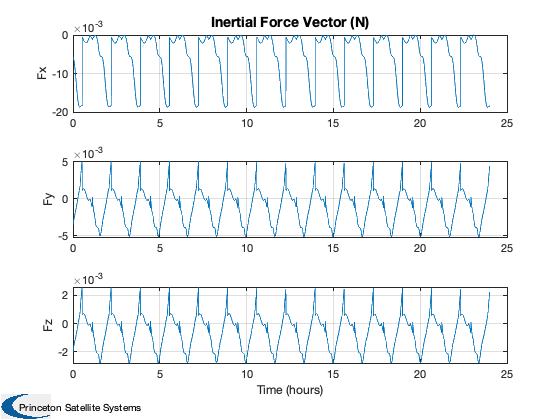 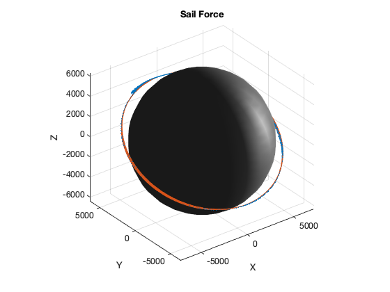 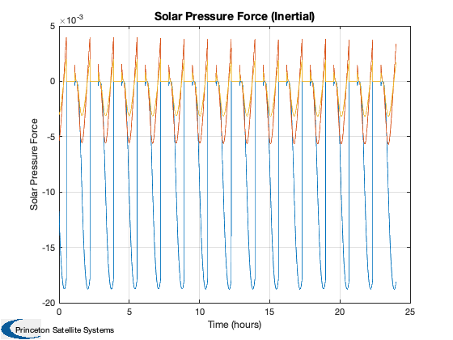 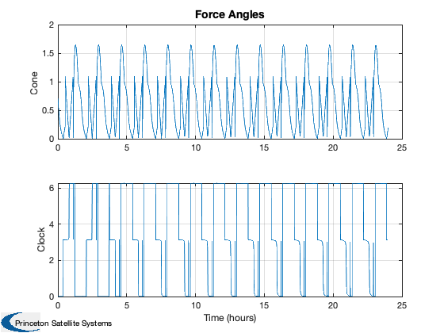 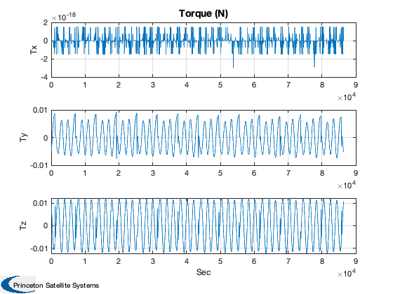 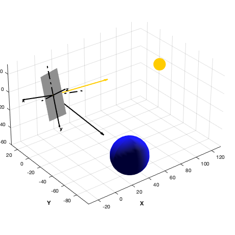 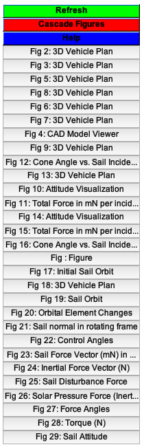